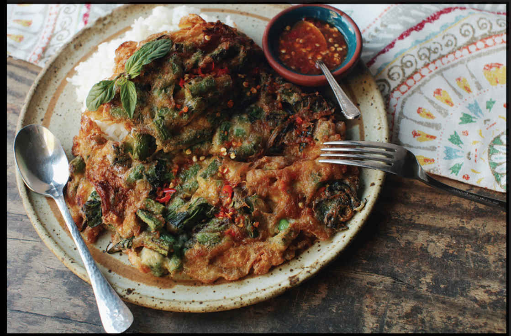
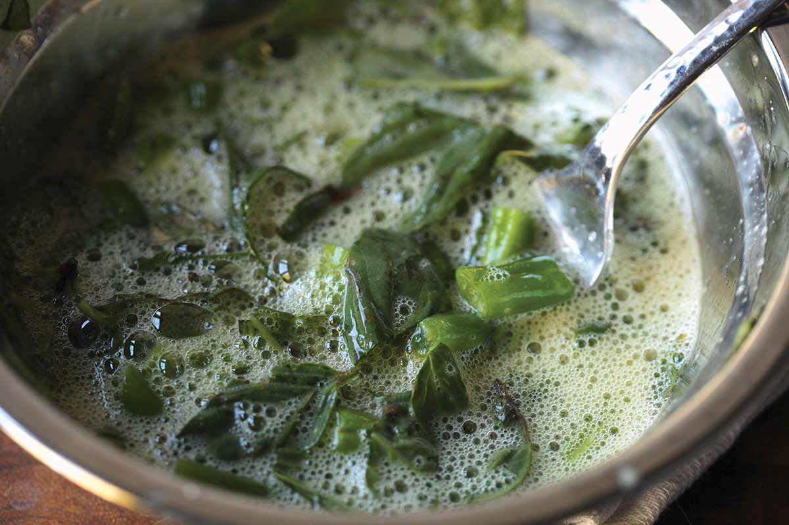
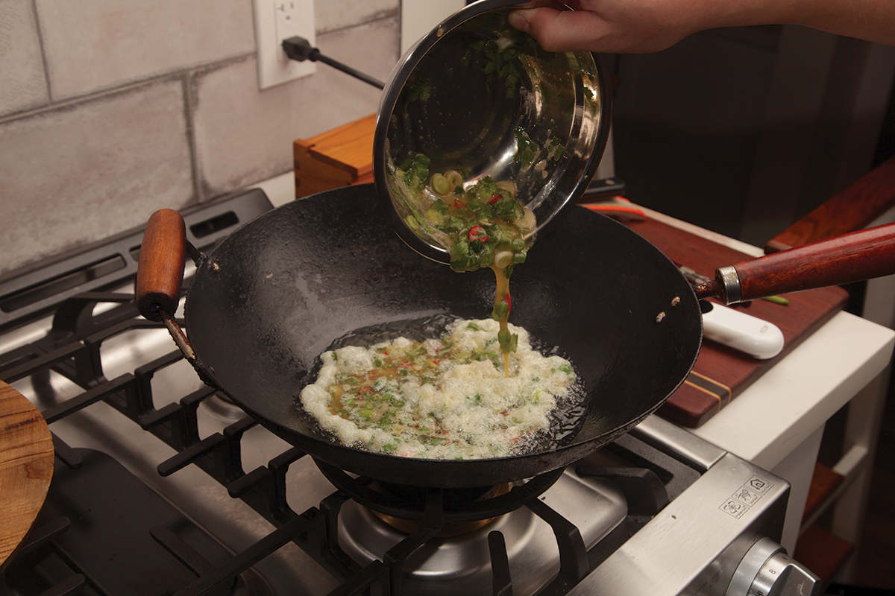
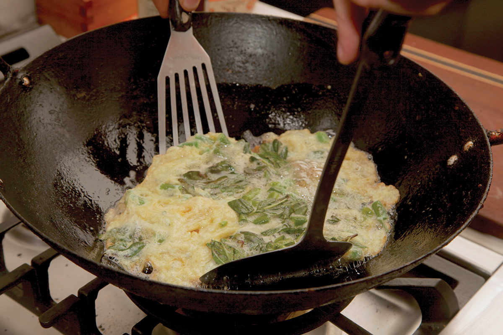
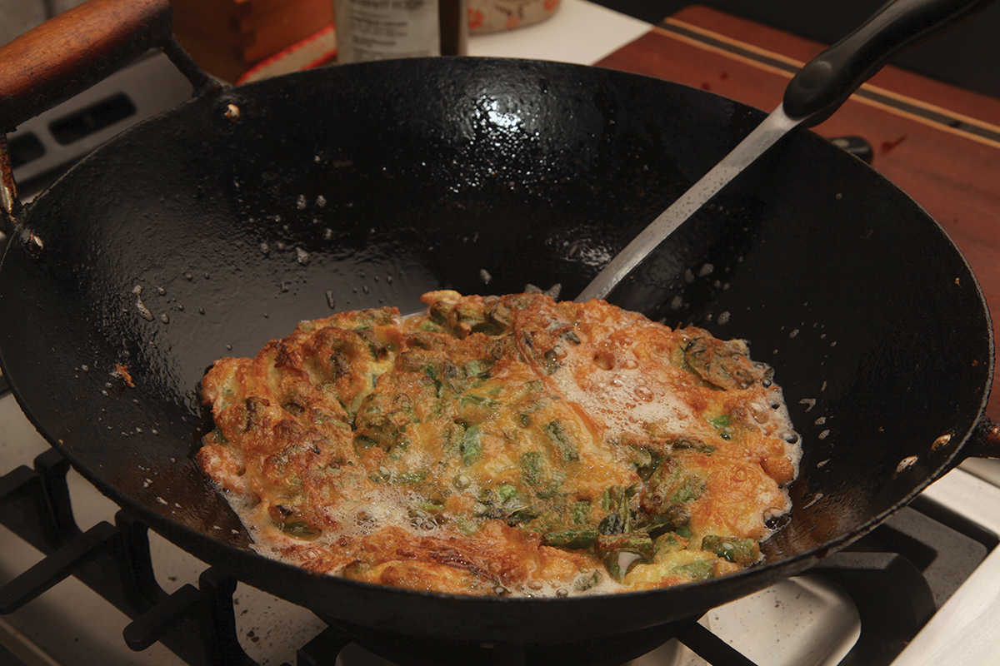

KHAI JIAO (THAI-STYLE OMELET)

If a sliding omelet scale based on how violently they are cooked existed, all the way on the left side would be French omelets, with their pale golden color and tender, custardy curd. Slide that to the right a little bit and you’d arrive at American-style diner omelets: a little bit firmer, with a pale golden-brown exterior. Push that slider all the way to the right and you get Thai-style khai jiao. Rather than custardy and dense, Thai omelets are fluffy and light, with deeply browned crispy edges and layers of texture. Imagine a deep-fried cloud—a deep-fried cloud that you’d want to serve on top of rice with a drizzle of Sriracha or nam pla prik—and you’re on the right track.
These omelets are a ubiquitous street food across Thailand, where an omelet on top of a pile of warm jasmine rice makes a quick lunch on the go. The simplest versions are nothing but eggs beaten with a touch of fish sauce and white pepper before being poured into a hot wok with just enough hot oil to shallow-fry the eggs. As the eggs go in, their water content is rapidly converted to steam, which causes the omelet to puff dramatically around the edges (and in the best omelets, there are a lot of these jagged, crispy, puffy edges). After around 20 seconds of cooking, the bottom side is golden brown and ready for a flip (I use two spatulas when flipping these types of omelets to keep from accidentally splashing hot oil onto myself). After another 20 seconds, it’s done.
There are only three things to be aware of when cooking Thai omelets. The first is oil temperature. Your oil needs to be piping hot before you pour in the eggs for the eggs to puff properly. I heat around a cup of oil over high heat until it registers 375°F (190°C) before adding the eggs and slightly reducing the heat. (If you don’t want to use a thermometer, just heat the oil until the very first wisp of smoke appears). Second, the eggs needs to be thoroughly beaten. There should be no lumpy bits of white or yolk, and there should be plenty of frothy bubbles in the raw egg mixture before you pour it into the oil (pouring the eggs from a height will create a more irregular shape, which increases the amount of crispy edges the omelet will have). Third, you should have a plate of steamed rice ready and waiting for the omelet before you start cooking. These omelets are fluffy, crispy, and light when they come out of the wok, but they will turn limp and greasy after a few minutes, so eat up fast!
|
Yield Serves 1 |
Active Time 6 minutes Total Time 7 minutes |
This recipe serves only one person, but it’s incredibly fast. To cook more than one omelet, have the egg mixture for subsequent omelets already beaten and ready to go in bowls. After cooking and serving the first omelet, there’s no need to empty the wok or strain the leftover oil. Just add enough fresh oil to bring the total amount up to around ½ cup and let the oil reheat before cooking the next omelet. Any errant bits of egg left from the first omelet will become part of the second.
INGREDIENTS
8 large eggs
1 teaspoon (5 ml) fish sauce
Small pinch of sugar (optional)
Small pinch of freshly ground white pepper (optional)
½ cup (120 ml) peanut, rice bran, or other neutral oil
To Serve:
1 cup steamed rice, ready and waiting on a plate
Sriracha or Nam Pla Prik (here)
If you want a heartier meal, Thai omelets are infinitely variable, and I’ve included some of my favorite variations after the recipe. So long as you cut your add-ins into small pieces (think about how you’d prepare ingredients for a Western-style omelet or a frittata) and keep the total amount of add-ins to around 3 ounces or less for every two-egg omelet, you can let your creativity run wild. This is an especially good way to use up leftovers from the fridge. These omelets are also a fun way to let guests or family members customize their meals by picking and choosing exactly which ingredients go into their eggs.
DIRECTIONS
1Break the eggs into a medium bowl. Add the fish sauce, sugar (if using), and white pepper (if using). Beat very thoroughly with a whisk, a fork, or a pair of chopsticks. This process should take at least 1 minute, and when you are done, the egg should be completely smooth. Test this by lifting your utensil up out of the eggs, letting them drizzle back down. There should be no visible strands or lumps. If there are, keep beating. The eggs should be frothy and bubbly.
2Heat the oil in a wok over high heat until it registers 375°F (190°C) on an instant-read thermometer or until you see the very first faint wisps of smoke. Immediately pour the egg mixture into the center of the wok and reduce the heat to medium (if using an outdoor wok burner, you’ll need to reduce the heat down to very low) in a steady stream over the course of 3 to 5 seconds. The eggs should immediately puff and sputter.
3Cook, swirling the wok gently and pushing the eggs around with the back of a spatula until the edges are golden brown and the bottom is golden brown, about 30 seconds. Using 2 spatulas (see step-by-step photos on here), carefully flip the omelet.
4Cook the second side, swirling gently, until the eggs are cooked through and the second side is golden brown, about 20 seconds longer. Lift the eggs with a wide spatula and allow the excess fat to drain off them, then place them on top of the rice and serve immediately with sriracha or nam pla prik.
Making a Thai Omelet, Step by Step




Step 1 • Beat the Eggs
Beating the eggs until frothy will make the omelet puff more.
Step 2 • Pour the Eggs into Hot Oil
Pouring the eggs into hot oil in a steady stream from a height will increase the amount of crispy bits.
Step 3 • Carefully Flip the Omelet
Use two spatulas when flipping the omelet, using one to flip it onto the other before lowering it back into the oil to reduce the risk of splashing.
Step 4 • Serve Immediately
Your plate of rice should be ready and waiting so that you can dig straight in (after adding a dash of sriracha or nam pla prik).
Thai-Style Omelet with Ground Pork and Shallots
Follow the recipe, but in step 1, add 2 ounces of raw ground pork and 1 small shallot, thinly sliced, to the eggs as you beat them. Proceed as directed. (Don’t worry, the pork will cook through!)
Thai-Style Omelet with Green Beans, Chiles, and Herbs
Follow the recipe but in step 1, add a small handful of green beans cut into ½-inch pieces, a finely chopped hot chile (such as Thai bird, jalapeño, or serrano), a chopped scallion, and a small handful of roughly chopped basil or cilantro leaves to the eggs as you beat them. Proceed as directed.
Thai-Style Omelet with Crab, Shrimp, or Oyster
Follow the recipe but in step 1, add 2 ounces picked lump crabmeat, roughly chopped raw shrimp, or a few raw shucked oysters (canned or smoked oysters work fine for this), along with a chopped scallion and a small handful of roughly chopped cilantro leaves to the eggs as you beat them. Proceed as directed.